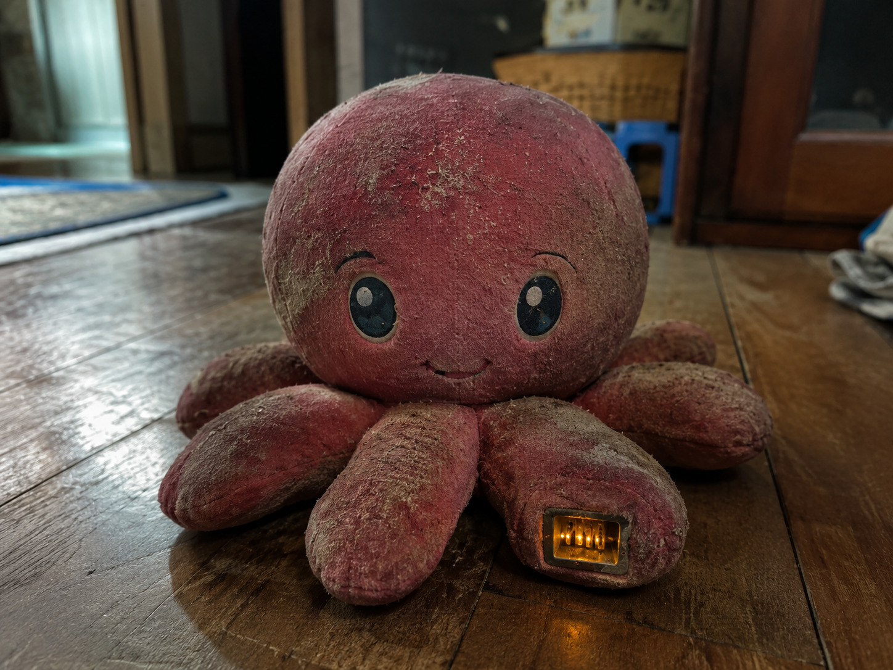

廃墟で拾った「タコ」の話
先に書いておくと、これは怪談の類いではない。ただ、拾ったものの説明が自分でもつかないので、ここに記録として残しておく。心当たりのある人がいたら教えてほしい。
先月、県北の外れにある「蒼沼ブルーランド」という遊園地の跡に入った。とっくに閉園した廃墟で、観覧車の骨組みだけが残っているような場所だ。管理棟だったらしい建物の、崩れた床板の下に、それは落ちていた。
タコのぬいぐるみだった。布はぼろぼろなのに、なぜか中だけ妙に重い。握ると、綿の奥に硬い芯のようなものがある。見ているうちに、足の付け根に小さな端子があるのに気づいた。充電端子だ。古い規格には見えない。むしろ、見たことのない形をしていた。

家に持ち帰って、ためしに手持ちの電源を当ててみた。しばらくして、布の隙間がうっすら光った。中の機械が起動したらしい。画面のようなものが立ち上がって、そこには「アーカイブ」と呼ばれる大量の記録が入っていた。
時刻は 1973年9月12日 09:04 で止まっていた。記録者の名前は「蛸川小蘭（たこかわ・こらん）」。検索してもこんな人物は出てこない。持ち主を探そうとしたが、手がかりは何もなかった。戸籍も、住所も、その名前で残っているものが、どこにもない。
正直に言うと、少し気味が悪い。でも、消してしまうには惜しい量の記録が入っている。手記や、写真や、古い掲示板の書き込みや、地図や、暗号めいたものまで。
なので、中身をそのままブラウザで開けるようにした（やり方の細かいところは省く）。この端末を持っていなくても、下のリンクから同じものを見られる。読み解くには、たぶん根気がいる。封鎖されたページがいくつもあって、散らばった手がかりを見つけて開いていく作りになっているらしい。
誰か、これが何なのか分かる人がいたら——最後まで読んで、教えてほしい。
それで気づいたことがある。あの記録の受信者の欄は、最初から私の名前ではなかった。「███」とだけ刻まれていて、私には読めない。誰に宛てたものなのかは、いまも分からない。